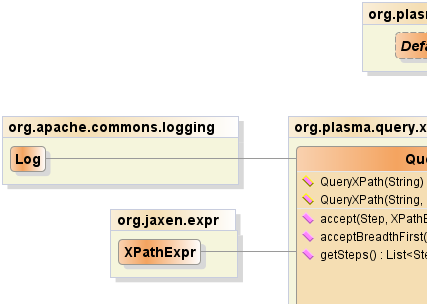
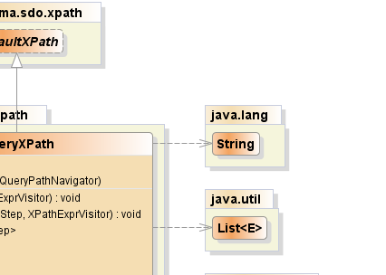
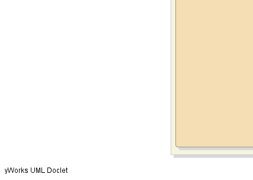
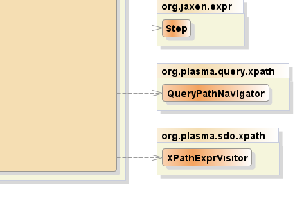

public class QueryXPath extends DefaultXPath
|  |  |
|  |  |
| Constructor and Description |
|---|
QueryXPath(java.lang.String xpathExpr)
Constructor for parsing of an XPATH without
navigation.
|
QueryXPath(java.lang.String xpathExpr,
QueryPathNavigator navigator)
Constructor for parsing and navigation of an XPATH
|
| Modifier and Type | Method and Description |
|---|---|
void |
accept(org.jaxen.expr.Step step,
XPathExprVisitor visitor) |
void |
acceptBreadthFirst(org.jaxen.expr.Step step,
XPathExprVisitor visitor) |
java.util.List<org.jaxen.expr.Step> |
getSteps() |
isXPathaddNamespace, booleanValueOf, createFunctionContext, createNamespaceContext, createVariableContext, debug, evaluate, getContext, getContextSupport, getFunctionContext, getNamespaceContext, getNavigator, getRootExpr, getVariableContext, numberValueOf, selectNodes, selectNodesForContext, selectSingleNode, selectSingleNodeForContext, setFunctionContext, setNamespaceContext, setVariableContext, stringValueOf, toString, valueOfpublic QueryXPath(java.lang.String xpathExpr,
QueryPathNavigator navigator)
throws org.jaxen.JaxenException
org.jaxen.JaxenExceptionxpathExpr - the XPATH expressionnavigator - the navigatorpublic QueryXPath(java.lang.String xpathExpr)
throws org.jaxen.JaxenException
org.jaxen.JaxenExceptionxpathExpr - the XPATH expressionpublic java.util.List<org.jaxen.expr.Step> getSteps()
throws org.jaxen.JaxenException
org.jaxen.JaxenExceptionpublic void accept(org.jaxen.expr.Step step,
XPathExprVisitor visitor)
public void acceptBreadthFirst(org.jaxen.expr.Step step,
XPathExprVisitor visitor)
PlasmaSDO™ and PlasmaQuery™ are trademarks of TerraMeta Software, Inc. Copyright © 2011 - All Rights Reserved.